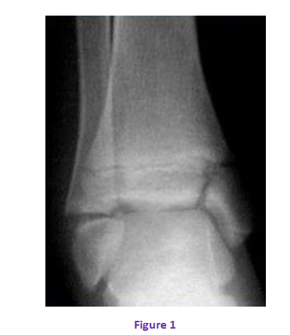

Cas clinique 21
Cheville
Enfant de 6 ans, sans antécédents pathologiques particuliers, s’était présenté aux urgences pour un traumatisme fermé de la cheville droite suite à un accident sur la voie publique.
L’examen clinique avait révélé une impotence fonctionnelle absolue du membre inférieur gauche. On avait aussi noté une douleur et une ecchymose interne de la cheville. Il n’y avait pas d’ouverture cutanée ni de complications vasculo-nerveuses.
Réponse :
Il s’agit d’une fracture décollement épiphysaire de la malléole interne, classée type III selon Salter & Harris.
Réponse :
C’est une fracture décollement épiphysaire de la malléole interne, donc on procédera à une réduction chirurgicale par abord du côté du fragment épiphysaire et une synthèse par vis :
- réduction manuelle au bloc opératoire sous anesthésie générale, en urgence, par manœuvres externes, sous contrôle scopique à l’amplificateur de brillance,
- - contention du foyer de fracture par embrochage,
- - immobilisation plâtrée : botte plâtrée pendant 45 jours,
- ablation des vis après consol
- l’inégalité de longueur du membre inférieur,
- - la désaxation.
Ils sont la conséquence de la survenue d’une épiphysiodèse.
Le traitement des fractures de la cheville est le plus souvent orthopédique. La manœuvre de réduction dépend du mécanisme : une fracture en abduction se corrige en adduction. Une fracture en adduction sera plâtrée en abduction. Le traitement orthopédique est en règle suffisant pour les types I et II si la réduction est anatomique, sinon une contention par vissage est obligatoire. Le traitement chirurgical est indiqué dans les fractures déplacées, surtout lorsque l’écart inter-fragmentaire est plus de 2mm et en particulier quand le trait est intra-articulaire. Le vissage est assuré en percutané si la fracture est stable, sinon on préférera une réduction chirurgicale.
- -Type I : Sous anesthésie générale et contrôle par amplificateur de brillance, réduction orthopédique et immobilisation par plâtre cruro-pédieux pour 45 jours.
- -Type II: Réduction orthopédique : si la réduction est anatomique : Plâtre cruro-pédieux. Sinon réduction chirurgicale par abord du côté de l’écaille métaphysaire et vissage. Plâtre cruro-pédieux pour 45 jours.
- -Type III : Réduction chirurgicale par abord du côté du fragment épiphysaire, embrochage ou vissage en compression épiphysaire, plâtre cruro-pédieux pour 45 jours.
- -Type IV : Réduction chirurgicale, embrochage ou vissage.
Commentaire :
- -Epiphysiodèse : Ces fractures intéressant le cartilage de croissance sont régulièrement pourvoyeuses de lésions de celui-ci générant des ponts d’épiphysiodèse.
Classiquement, les lésions type III, IV et V sont les plus à risque ainsi que les fractures comminutives.
Ces ponts d’épiphysiodèse seront alors responsables d’anomalies d’axe ou de d’anomalies de longueur.
- -Cal vicieux.
- -Arthrose précoce.
Figure 1

Références
- -C. Maximin Giacomelli.
Maitrise orthopédique N° 142 - Mars 2005
Les fractures de la cheville chez l’enfant
- Karrholm J, Hansson L.I, Laurin S.
Pronation injurie of the ankle in children Acta orthop . scand, 1983, 54, 1-17.
- Mayrargue E, D. Fron, B. Herbaux.
Fracture de la cheville de l’enfant ; monographie de GEOP sauramps médical 2002, p 261-72.
- Henri Bracq. M Chapuis. P Violas
Fractures du cou-de-pied de l'enfant ; 1997 Éditions Scientifiques et Médicales Elsevier SAS pp 1-4.
- Bouchet A, Cuilleret Y
Anatomie le membre inférieur.Os et articulation du cou-de-pied de l’enfant. Volume 3, chapitre 12- 13- 14, pp : 1625-1653.
- Afifi, S. Mezzine, Y. Teklali, F. Ettaybi, M. Benhammou
Les fractures de la cheville chez l’enfant a propos de 51 cas, Rev Maroc. Chir. Orthop. Traumato, 2004 ; 16-19.
- Badelon
La traumatologie de la cheville de l'enfant Conférences d'enseignement de la Sofcot orthopédiatrie volume 4 1990 ; 38 97-114.PP 83-99
- Cooperman D.R., Spiegel P.G., Laros G.S.
Fractures involving the ankle in children. The so-called triplane epiphyseal fracture.J. Bone Joint Surg, 1978, 60 A, 1040-1046.
- DIAS L.S., Tachdjan M.O.
Physeal injuries of the ankle in children.Classification .Clin.Orthop. 1978, 136, 230- 233.
- LETTS R.M
The Hidden adolescent ankle fracture J. PED ORTHOP. 1982, 2, 161 -164.